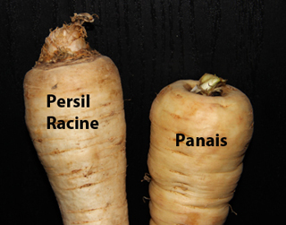

Dit is een bijzonder zeldzame groente uit ons groenteaanbod. De aangename smaak lijkt op die van peterselie, pastinaak en knolselder. Deze groente is erg in trek in Oost-Europa, vooral in Polen en Roemenië. In Poolse supermarktjes heeft u dus de meeste kans om wortelpeterselie terug te vinden.
Maar let op! Wortelpeterselie lijkt sterk op pastinaak waardoor verwarring mogelijk is. Als er "korzen pietruszki" vermeld staat, gaat het wel degelijk om wortelpeterselie... Net zoals de pastinaak heeft wortelpeterselie een witachtige kleur en beide groenten behoren tot de schermbloemenfamilie. Om ze van elkaar te onderscheiden, moet u letten op de wortelhals. Bij de pastinaak valt de bladaanzet in een kuiltje en bij de wortelpeterselie op een heuveltje (zie onderstaande foto).
In Oost-Europa wordt de wortelpeterselie traditioneel gebruikt in puree, soepen en diverse sausbereidingen. De krachtige smaak vormt immers een meerwaarde in tal van gerechten. Als u niet gewend bent aan zulke sterke smaken, kan u deze wat verzachten door de groente te verwerken in bijvoorbeeld een stamppot of in combinatie met andere groenten. Rauwe wortelpeterselie is ook heel lekker, bijvoorbeeld in salades. De groente wordt ook soms "knolpeterselie" genoemd.